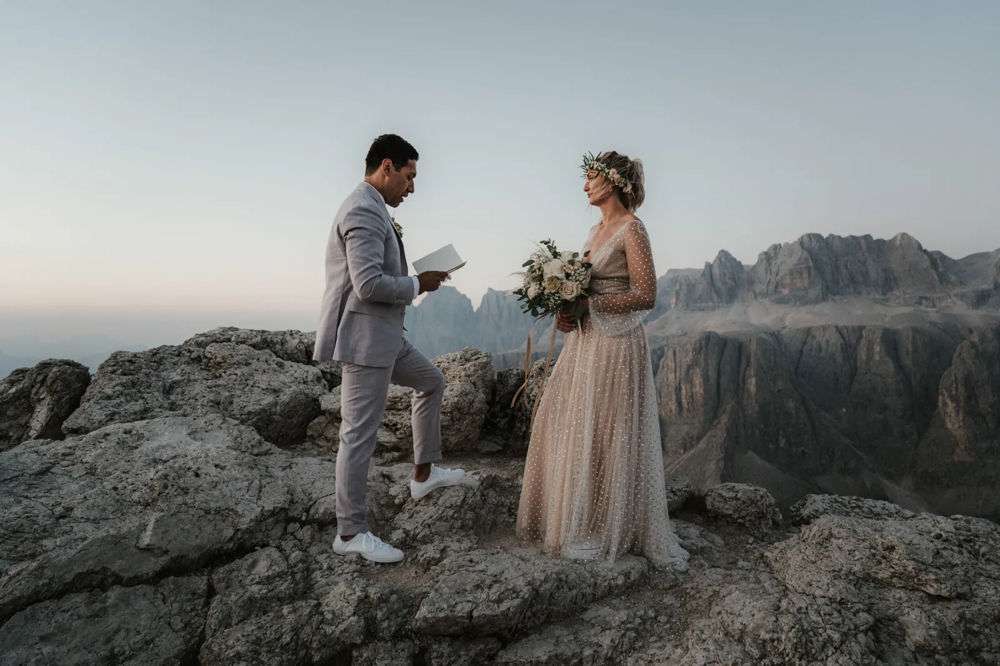
La misma cumbre es dos lugares distintos al alba y al ocaso. El amanecer os compra soledad, aire frío y el alpenglow rosado antes de que despierte el valle; el atardecer os da calidez, un ritmo tranquilo y un cielo que arde al irse. Ninguno es mejor — son días distintos, y la elección marca en silencio todo: la alarma, el esfuerzo, la gente, el ambiente de vuestras fotos. Así ayudamos a las parejas a elegir su luz, con las concesiones honestas y los lugares que van con cada una.
Vedlo como elegir un carácter para el día. Un elopement al amanecer es silencioso y un poco heroico: os levantáis a oscuras, subís con frontal y llegáis cuando la primera luz prende las cumbres, a menudo completamente solos. Un elopement al atardecer es generoso y relajado: un paseo lento por la tarde, luz cálida que perdura una hora y una cena de celebración esperando abajo. Todo lo demás — cómo os vestís, adónde vais, cuánta gente podéis llevar — se deriva de esa única decisión, y por eso la tomamos primero.
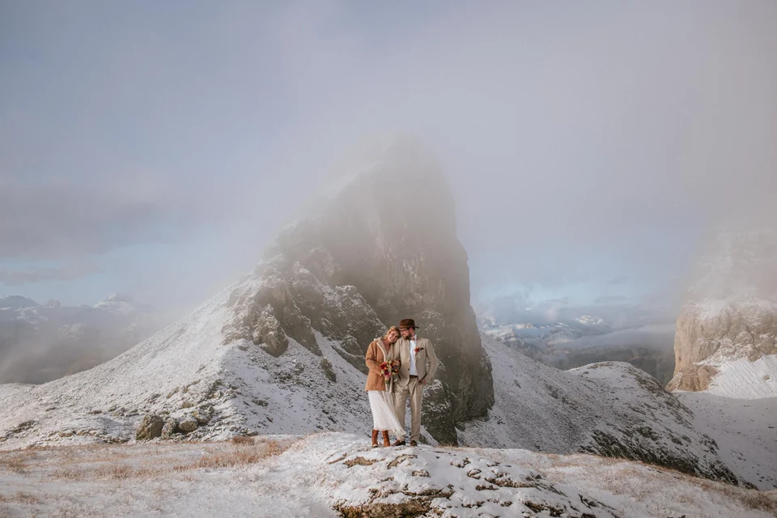
Salir antes del alba es lo más parecido que conocemos a tener las montañas para vosotros. El inicio del sendero está vacío, el aire es cortante y quieto, y cuando el sol asciende la roca pasa de gris a rosa a oro en cuestión de minutos — el alpenglow que ningún filtro puede fingir. Hay una quietud a esa hora que cambia cómo la gente se yergue y habla; los votos al amanecer salen más suaves y verdaderos, porque no hay nadie en kilómetros ante quien actuar.
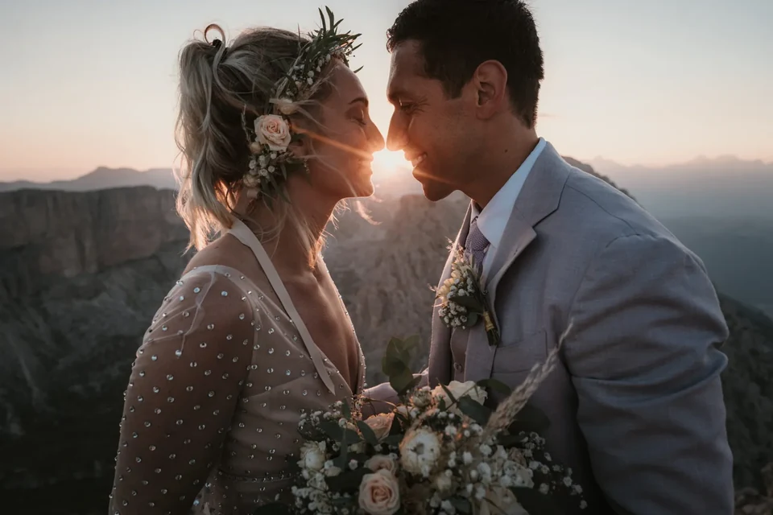
Os pide algo: una alarma en algún punto entre las 03:00 y las 05:00 según el mes, una caminata a oscuras y capas de abrigo para una cumbre que puede rozar el punto de congelación incluso en julio. Exploramos el sendero la víspera, lo recorremos con vosotros con frontal y calculamos la subida para que estéis en posición con luz de sobra. La recompensa es una versión de las montañas que casi nadie ve — y fotos con una calidad de luz que el mediodía sencillamente no puede dar.
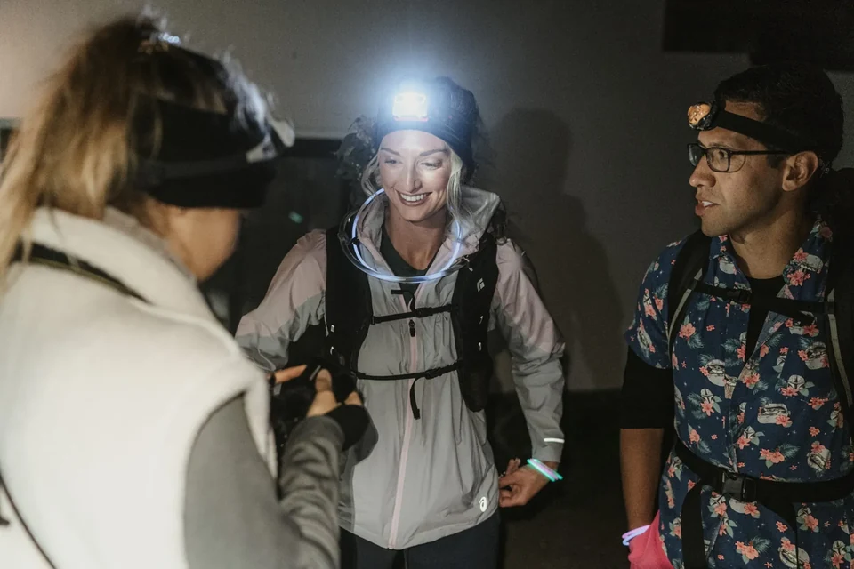
El atardecer es la opción indulgente, y no hay vergüenza en ello — algunos de nuestros días más bellos terminan en la luz en vez de empezar en ella. No hay alarma; os preparáis a una hora civilizada, subís por la tarde y dejáis que la luz venga a vosotros. La hora dorada en la montaña es larga y generosa, la cálida luz lateral envolviendo rostros y roca, y se desliza hacia el espectáculo de fuego de la enrosadira, cuando las paredes dolomíticas brillan de un rojo brasa durante unos minutos irrepetibles.
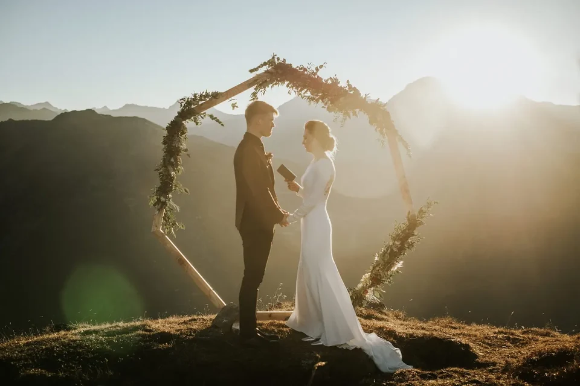
A cambio hay compañía. Los buenos miradores que están vacíos al alba pueden estar concurridos al ocaso, así que os llevamos a salientes y prados menos conocidos, o a lugares donde la gente se despeja en cuanto baja el último teleférico. El atardecer también corre contra el reloj en la otra dirección: la luz se apaga rápido, y no queréis andar buscando el sendero a oscuras por accidente. Planificamos la bajada con tanto cuidado como la subida — o, en nuestras tardes favoritas, reservamos un refugio de montaña para no tener que bajar en absoluto.
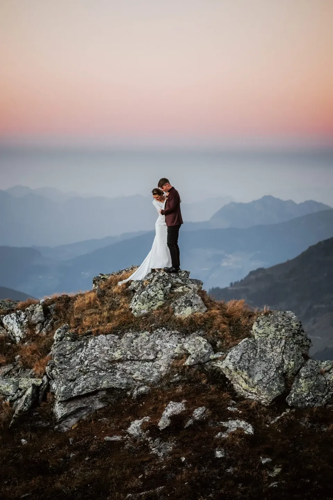
Entonces, ¿cuál es el vuestro? Elegid el amanecer si la imagen en vuestra cabeza es soledad — cumbres vacías, luz rosa suave, una ceremonia privada con nadie en el encuadre salvo vosotros. Elegidlo también si queréis los lugares más dramáticos en su versión más tranquila, o si el calor y las multitudes del verano os echan atrás. Elegid el atardecer si las mañanas no son lo vuestro, si lleváis a unos invitados a quienes costaría un inicio a las 4 de la mañana, o si queréis que el día termine en calidez y una cena en vez de empezar en el frío. Cuando una pareja de verdad no consigue decidir, a veces hacemos ambos en dos días — un atardecer para asentaros, un amanecer para el acto principal.
También es cuestión de temperamento. El amanecer premia a la pareja que ama una misión compartida — la alarma, la subida, la recompensa se sienten ganadas, y el día empieza en un subidón que tiñe todo lo que viene después. El atardecer va con la pareja que quiere saborear, no esforzarse: una comida larga, un paseo sin prisa y todo fundiéndose en una cena. Ninguno es más romántico; son románticos en tonos distintos. Decidnos cuál suena a vosotros y os diremos con honestidad si vuestro lugar soñado puede ofrecerlo.
Horas locales aproximadas para los Dolomitas (zona de Cortina d’Ampezzo). Las cumbres altas y las paredes del valle pueden desplazar la luz real 20–40 minutos, así que planificad siempre un margen.
| Mes | Amanecer | Atardecer |
|---|---|---|
| Mayo | 05:45 | 20:40 |
| Junio | 05:25 | 21:05 |
| Julio | 05:40 | 21:00 |
| Agosto | 06:10 | 20:25 |
| Septiembre | 06:45 | 19:25 |
| Octubre | 07:20 | 18:25 |
La hora dorada — la luz suave y cálida — cae aproximadamente en los 30–40 minutos tras el amanecer y antes del atardecer. Las horas son de verano de Europa Central (CEST); a finales de octubre se atrasa una hora.
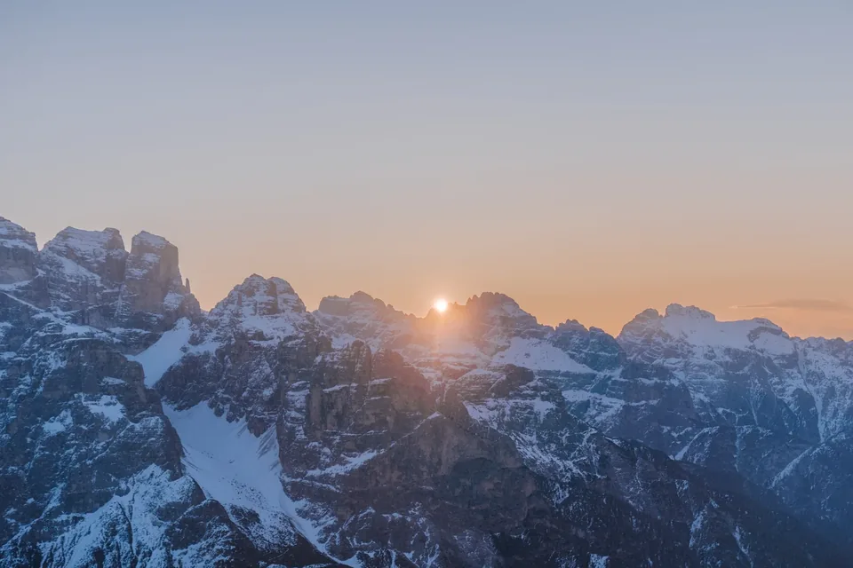
El alba va con lugares a los que llegáis antes de que arranque la maquinaria del día. El Lago di Braies es el clásico: espejado y vacío con la primera luz, mucho antes de las multitudes — tened en cuenta que del 1 de julio al 15 de septiembre la carretera de acceso necesita una reserva anticipada entre las 09:00 y las 16:00, otra razón por la que preferimos estar allí al amanecer. Las Tre Cime di Lavaredo se alcanzan por la carretera de peaje de Auronzo, que en verano (aproximadamente de finales de mayo a finales de octubre, según temporada y clima) es transitable a primera hora, así que podéis subir a oscuras y estar en las cumbres para el primer color. El peaje del coche ronda los 40 €, y puede requerirse un billete online anticipado — de eso nos ocupamos nosotros.
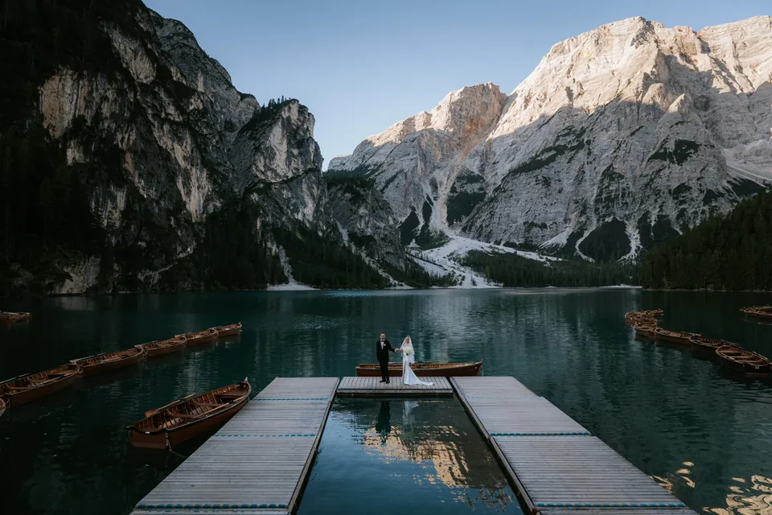
Las crestas como el Seceda son la excepción que confirma la regla: la primera cabina sube hacia las 08:30, demasiado tarde para el color del alba, así que un amanecer real en el Seceda implica o una subida con frontal a oscuras o una noche en un refugio cercano. Suena a mucho, y lo es — pero estar en esa cresta mientras se vuelve rosa, con el teleférico aún a horas de su primer viaje, es una de las grandes experiencias que ofrecen estas montañas. Solo se lo proponemos a las parejas a las que les gusta la idea de ganárselo.
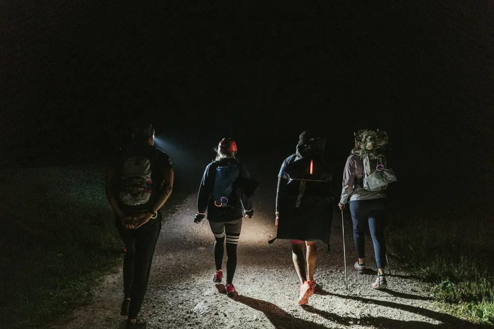
La tarde favorece los miradores a los que llegáis en teleférico y dejáis en calidez — idealmente aquellos donde podéis coger la última cabina de bajada o, mejor aún, dormir arriba. La terraza del Sass Pordoi, el Lagazuoi con su refugio al borde del precipicio, el ondulante Alpe di Siusi y la Nordkette justo sobre Innsbruck captan la hora dorada de maravilla y se vacían en cuanto los excursionistas de día se van a casa. La única regla es conocer vuestra última bajada: comprobad la hora del último teleférico al minuto, y donde no hay opción tardía, simplemente reservamos el refugio de montaña y hacemos noche.
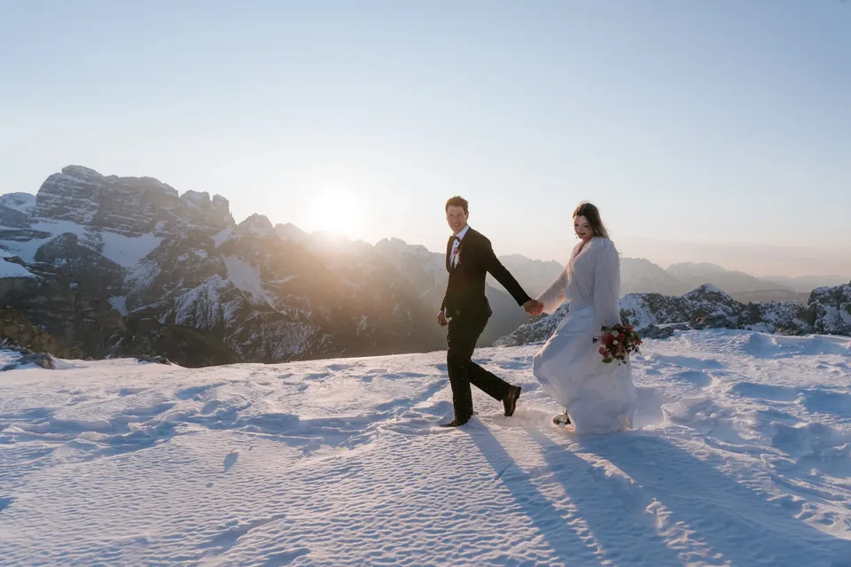
Los prados merecen una mención especial para el atardecer. Donde una cresta puede ser ventosa y expuesta al caer la temperatura, los pastos abiertos del Alpe di Siusi o un tranquilo hombro de valle quedan suaves bajo los pies y brillan de maravilla cuando la luz lateral rastrilla la hierba. Son fáciles de alcanzar, fáciles de recorrer e indulgentes si lleváis invitados o un vestido más largo — un aterrizaje suave para el final del día.
Ayuda conocer los nombres de lo que perseguís. El alpenglow es el baño rosa a violeta sobre las cumbres en los minutos antes del amanecer y después del atardecer, cuando el sol sigue bajo el horizonte. La hora dorada es la luz cálida, baja y favorecedora en los 30–40 minutos justo después de que el sol supere la cresta o justo antes de que caiga. La enrosadira es el milagro propio de los Dolomitas, el brillo rojo brasa que la pálida caliza devuelve al ocaso y al alba. Y la hora azul, la ventana fresca y tranquila tras irse la luz cálida, es la que la mayoría se pierde por recoger demasiado pronto — nosotros nunca.
Conocer la secuencia nos deja construir el día como una pieza de música. En un amanecer fotografiamos primero el frío alpenglow, luego los votos cuando llega la luz cálida, luego retratos sueltos y alegres una vez que el sol ya está alto. En un atardecer lo hacemos al revés: retratos en la generosa luz dorada, la ceremonia sincronizada con la enrosadira y los tranquilos fotogramas de la hora azul para cerrar. Las mismas cumbres, ritmo opuesto — y en cuanto sabéis qué ritmo queréis, todo el plan casi se escribe solo.
La diferencia práctica entre los dos días va, en realidad, de oscuridad y tiempo. Un amanecer significa moverse a oscuras: frontales para todos, un sendero que ya hemos explorado, pilas de repuesto y guantes que agradeceréis arriba. Un atardecer significa correr contra la luz que se apaga de vuelta a casa — o eliminar la carrera del todo quedándoos arriba. Las carreteras también importan: la carretera de peaje de las Tre Cime está abierta a primera hora en verano para el acceso al alba, mientras que la mayoría de los teleféricos solo sirven el mediodía, que es justo por lo que los lugares dependientes de teleférico son lugares de tarde.

Nada de esto pretende asustaros del inicio temprano — pretende hacerlo sin esfuerzo. Nosotros cargamos el plan para que vosotros no carguéis más que los nervios: exploramos, calculamos, traemos el frontal de repuesto y un termo de algo caliente, y os llevamos a posición con luz de sobra. Llevad a unos invitados a un amanecer y también los instruimos, para que el grupo se mueva como uno a oscuras en vez de dispersarse.

Vestíos para la hora, no para la postal. Al alba una cumbre puede rozar el punto de congelación incluso en pleno verano, así que superponemos: el vestido o el traje que amáis, con capas de abrigo por encima que se quitan para las fotos y vuelven a ponerse entre ellas. Buen calzado para la caminata y los zapatos bonitos en una bolsa; guantes y gorro que viven en un bolsillo hasta que baja la cámara. El atardecer es más amable pero no cálido — en cuanto se va el sol, la temperatura cae rápido, así que la misma regla vale una hora después. Os decimos exactamente qué esperar para vuestra fecha, vuestro lugar y vuestra luz.
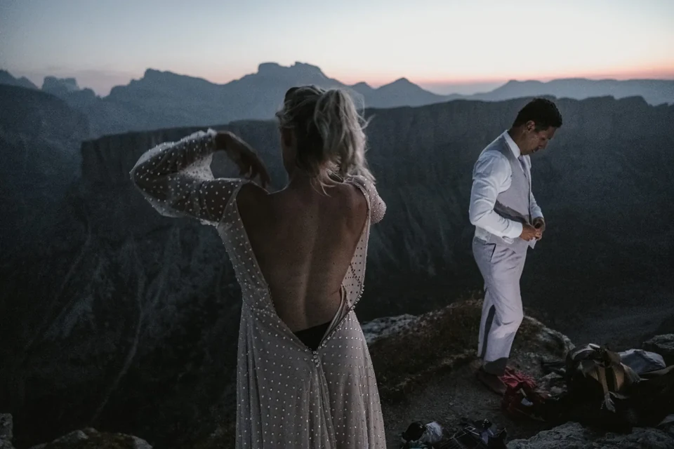
La luz misma se mueve a lo largo del año, y cambia las cuentas. En junio el sol sale antes de las 05:30 y se pone después de las 21:00 — noches cortas y una alarma brutalmente temprana, pero los días más cálidos y largos. Para octubre el alba se desliza casi a las 07:30 y el ocaso a eso de las 18:00, lo que hace un elopement al amanecer de verdad civilizado y un atardecer de otoño maravillosamente temprano. Los meses intermedios cambian algo de calidez por horarios más amables y menos gente; el pleno verano os da el clima más suave y los senderos más concurridos. La tabla de arriba tiene los números — construimos vuestra mañana o tarde en torno a ellos.
Sea cual sea la luz que elijáis, no recojáis cuando se desvanezca. Tras el amanecer hay una mañana suave y clara que disfrutar — un desayuno en un refugio, un sendero vacío de bajada, todo el día aún por delante. Tras el atardecer llega la hora azul, la ventana fresca y tranquila cuando el cielo se vuelve profundo y aparecen las primeras luces en el valle; son nuestros diez minutos favoritos para un último fotograma tierno antes de encender los frontales. Luego la celebración: una cena en un refugio, un recorrido por los puertos a oscuras, o simplemente la bajada con un anillo nuevo y sin ningún sitio adonde ir.
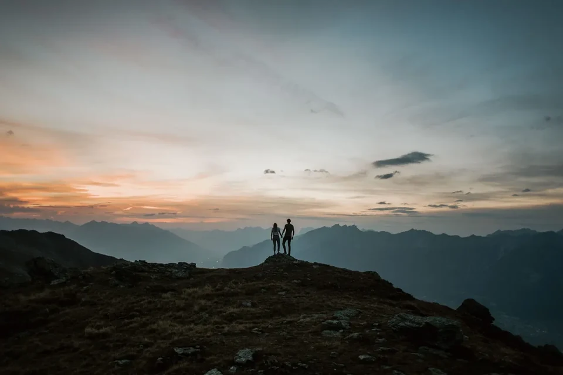
Con honestidad, el amanecer gana en luz y soledad: cumbres vacías, alpenglow rosado y una ceremonia privada que nadie puede abarrotar. El atardecer gana en comodidad: sin alarma, una subida relajada y luz cálida que perdura. Si podéis con el inicio temprano, tomad el amanecer; si las mañanas no son lo vuestro o lleváis invitados, el atardecer es la opción fiable y bella.
Depende del mes y de la caminata — la alarma suele caer entre las 03:00 y las 05:00, más temprano en junio, más tarde en octubre. Exploramos el sendero la víspera y calculamos la subida para que lleguéis a vuestro lugar con luz de sobra, y cargamos el plan para que lo único que tengáis que hacer sea levantaros.
No. Las primeras cabinas suben demasiado tarde para el alba — el Seceda desde las 08:30 aprox. y la Nordkette sobre Innsbruck desde las 08:00 aprox. —, así que un amanecer real en una cresta implica o una subida con frontal a oscuras o una noche en un refugio. Los lugares junto a la carretera y las cumbres con carretera de peaje son la vía más fácil a la primera luz.
Es más fácil de lo que suena cuando está planificado. Exploramos el sendero primero de día, traemos frontales de repuesto y bebidas calientes, mantenemos al grupo unido y calculamos todo con margen. Para la mayoría de las parejas, la caminata a oscuras se convierte en una de las mejores partes del día — tranquila, íntima y llena de expectación.
Eso es lo único que hay que planificar con cuidado. Donde habéis subido en teleférico, comprobamos la última bajada al minuto y os mantenemos por delante de ella; donde no hay opción tardía, simplemente reservamos un refugio para que paséis la noche y os saltéis la bajada por completo. En cualquier caso planificamos el camino de vuelta con tanto cuidado como el de subida.
Cada mes tiene su compensación. Junio tiene los días más cálidos y largos, pero la alarma más temprana; septiembre y octubre traen horas de amanecer civilizadas, aire fresco y claro y multitudes mucho más finas, con el añadido de los alerces dorados. La tabla de arriba tiene los números de cada mes, y construimos vuestra mañana o tarde en torno a ellos.
Usamos cookies para estadísticas anónimas (Google Analytics vía Google Tag Manager) para mejorar el sitio. La analítica solo se activa con tu consentimiento. Política de privacidad